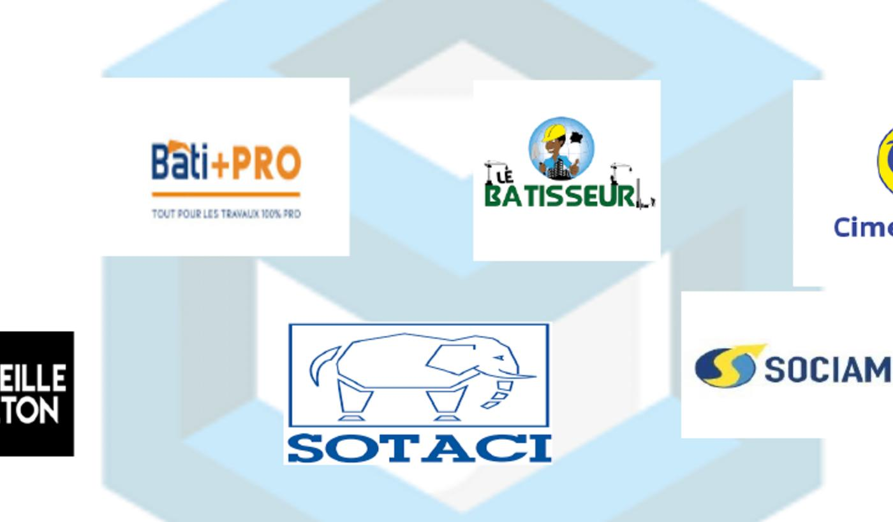

Analyse marché
Lecture expert
Pourquoi le plan 3D réduit les retouches coûteuses sur un chantier premium
La 3D aide à figer les volumes, les parcours, les façades et les ambiances avant de lancer les achats et les corps d'état. Le résultat est simple : moins d'hésitations, moins de reprises et plus de maîtrise budgétaire.
Voir l'expertise

Réhabilitation
Conseil chantier
Comment remettre à niveau un actif sans dégrader sa valeur d'exploitation
Une bonne réhabilitation ne consiste pas à tout refaire. Elle consiste à cibler les postes qui changent l'usage, l'image et la durabilité du bien, tout en gardant une lecture claire du retour sur investissement.
Découvrir l'approche JERU

Approvisionnement
Vision terrain
Ce que les partenaires techniques changent dans la qualité finale d'un projet
Le rendu final dépend aussi de la qualité des matériaux, des délais de livraison, des équipements installés et du niveau de coordination entre fournisseurs et terrain. C'est là que le réseau partenaire devient un vrai actif.
Voir l'expertise